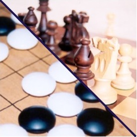

The Cambridge Junior Chess and Go Club is a club in Cambridge for children to play Chess and Go. These are traditional board games of skill and strategy enjoyed by millions of players worldwide. There is teaching given so children can improve. Occasionally other games like Oware, Shogi and Chinese Chess are played.
We have meetings in the north of Cambridge at St Augustine’s Hall, Richmond Road, Cambridge CB4 3PT on Wednesdays and in the south of Cambridge at St Philip’s Church, 185 Mill Road, Cambridge CB1 3AN on Thursdays. All meetings cost £5 per week. Or you can pay for a whole term in advance for £40, contact us (cambridgechessgo at gmail dot com) for the bank details. There will be some additional subscription fees for other competitions.
Children of any age from 6 to 16 are welcome at both meetings. Parents may leave their children at the club or they may stay, they are welcome to join in the club activities if they are interested. The first part of each meeting is a short teaching session which usually alternates between Chess one week and Go the next. In the second part of the summer term we teach and play some other traditional games from around the world too.